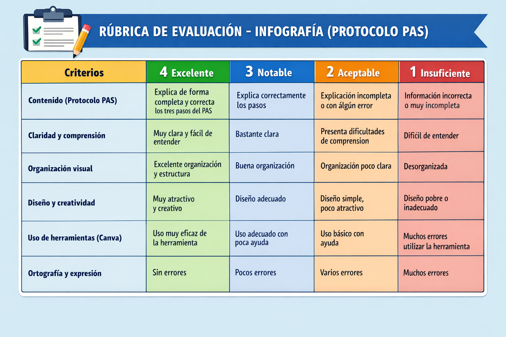
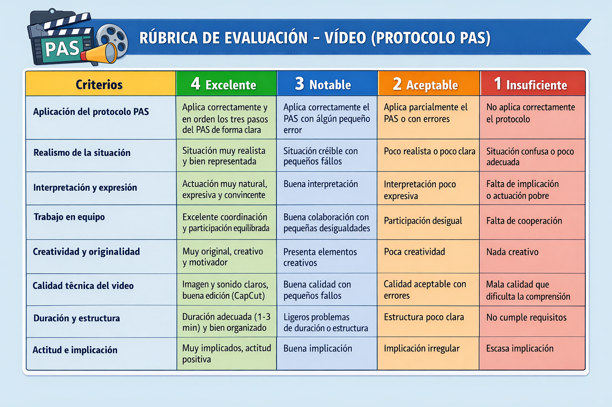

<h1 class="box-title idevice-element-in-content" data-original-title="🧩 Actividad 1: Infografía" style="accent-color: rgb(11, 161, 161); border-color: rgb(216, 218, 229); border-style: solid; border-width: 0.666667px; border-image: none 100% / 1 / 0 stretch;">🧩 Actividad 1: Infografía</h1>
🎯 Objetivo: Explicar el protocolo PAS de forma clara y visual
📌 Instrucciones:
Realiza una infografía en Canva
Debe incluir:
- Definición de PAS
Pasos explicados - Imágenes o iconos
- Al menos un elemento interactivo
👥 Trabajo en parejas
Rúbrica Actividad 1: Creación de una infografía
Criterios que evalúa: 1.6

🎬 Actividad 2: Vídeo (Sketch situación de emergencia)
🎯 Objetivo: Representar una situación real aplicando el protocolo PAS
📌 Instrucciones:
- En grupos de 4-5 personas
- Crear un vídeo corto (1-3 minutos)
- Usar CapCut para editar
🎭 Debe incluir:
Situación de emergencia
Aplicación correcta del PAS
Reparto de roles
Rúbrica Actividad 2: creación de Vídeo
Criterios que evalúa: 1.4, 2.1, 3.2, 3.3
